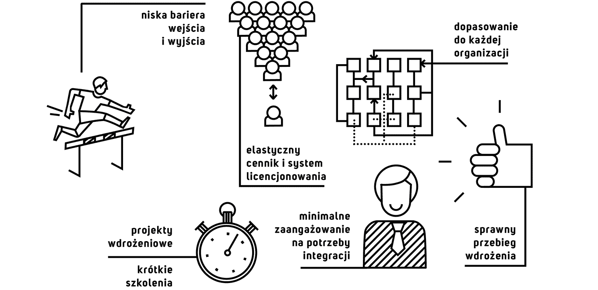

Nowoczesna infrastruktura powinna szybko nadążać za zmianami w całej organizacji. Podobne wymagania stawiane są przed narzędziami biznesowymi. Nasze rozwiązanie charakteryzują duże możliwości parametryzacji, co pozwala na dopasowanie aplikacji do najbardziej skomplikowanych organizacji. Dzięki zaś elastycznemu cennikowi nasi klienci płacą wyłącznie za faktyczne wykorzystanie systemu. Naszym celem są minimalne okresy projektów wdrożeniowych, a użytkownicy mogą rozpocząć korzystanie z systemu natychmiast po krótkim szkoleniu.
System Vaterval to:
